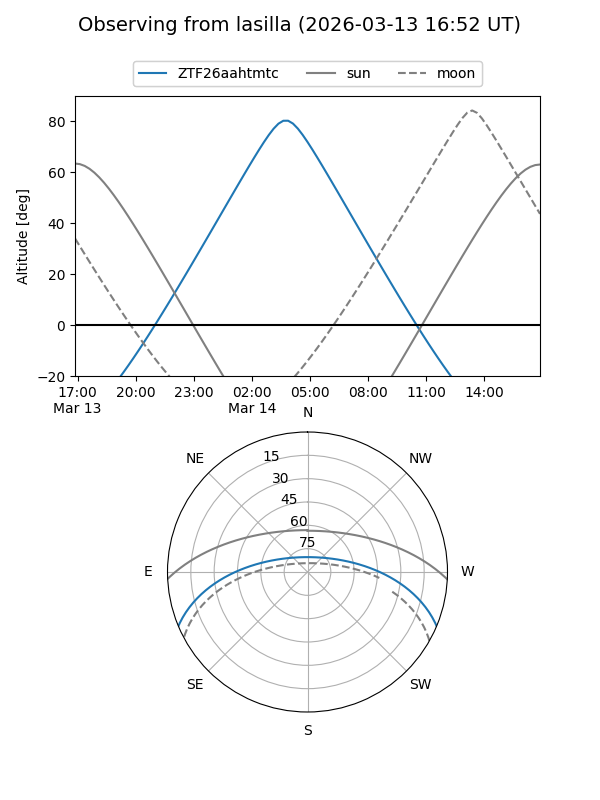
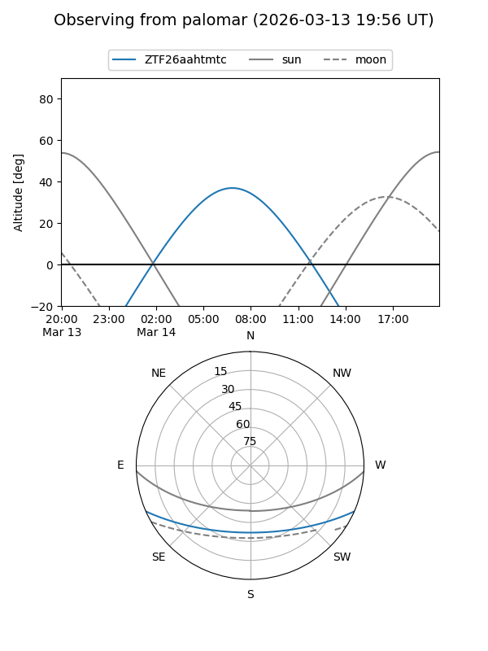

ZTF26aahtmtc
Target ZTF26aahtmtc at 2026-03-14 07:21
Aliases and brokers:
FINK: link
Lasair: link
ALeRCE: link
alt names
ZTF26aahtmtc (ztf,fink_ztf)
Coordinates:
equatorial (ra, dec) = 156.9468,-19.55237
equatorial (HMS+DMS) = 10:27:47.23,-19:33:08.53
galactic (l, b) = (262.3750,+31.77896)
Flags:
Photometry:
last ztfg=18.55
1 ztfg detections
Lightcurve
Visibility


Additional plots